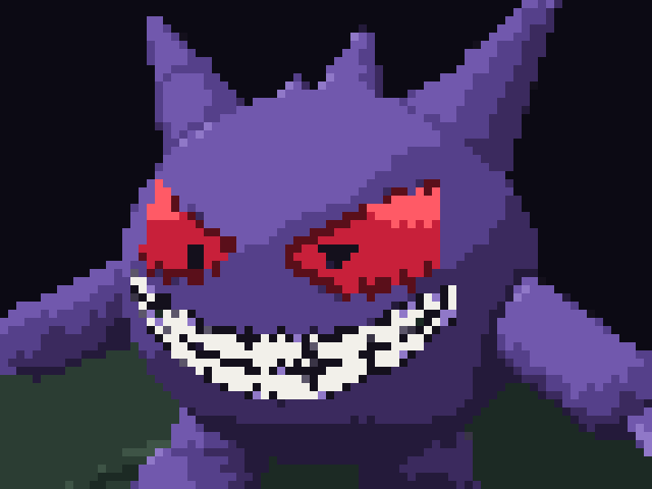
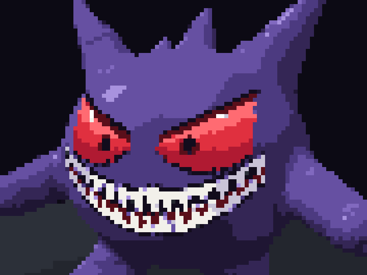
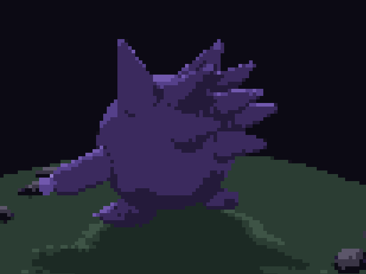

Picachu
Primeira versão: peças encaixadas, sorriso com grade de dentes e chão de grama com pedras.
◈ Entrar no Dimension ExplorerFan art feita com a mesma técnica das cenas da torre. O corpo, as orelhas e os espinhos são formas esculpidas; os olhos e o sorriso são pintados direto na superfície. Duas versões, para comparar o antes e o depois.
Escolha uma cena para entrar no Dimension Explorer, o modo 3D: arrastar gira · roda aproxima · botão direito move o foco · Esc sai

Primeira versão: peças encaixadas, sorriso com grade de dentes e chão de grama com pedras.
◈ Entrar no Dimension Explorer
Membros fundidos ao corpo com curvas suaves, dentes triangulares encaixados, olhos com contorno e brilho, chão liso.
◈ Entrar no Dimension ExplorerVídeos renderizados pelo Ink Studio, quadro a quadro. Um esqueleto simples move corpo, braços e pernas, e os efeitos são splats extras.
As duas versões usam o mesmo corpo e as mesmas proporções. A segunda foi refeita peça por peça para aguentar a câmera de perto. As imagens abaixo são do mesmo ângulo, renderizadas pelo Ink Studio.





Cada splat aparece como um ponto de 2 pixels, sem a elipse que o visualizador normalmente desenha. Na versão 1 dá para ver através do corpo; na versão 2 os pontos já formam a superfície. Repare também no chão, que ficou mais ralo de propósito.
| Parte | Versão 1 splats · res | Versão 2 splats · res | Ganho | Técnica que mudou |
|---|---|---|---|---|
| Corpo | 9.888 · 0,045 | 43.381 · 0,026 | ×4,4 | De uma bola isolada para um sólido único: S.join('round', corpo, peças, { r: 0.14 }) amostra corpo e emendas de uma vez. |
| Orelhas e espinhos | 3.134 · 0,05 | 25.225 · 0,026 | ×8 | De 7 para 13 espinhos, curvos (tubo de 3 pontos) e mais longos; orelhas com 4 pontos. Todos fundidos ao corpo. |
| Braços e mãos | 1.494 · 0,05 | 9.873 · 0,026 | ×6,6 | Dedos próprios (tubos) dentro da junção; garras separadas com res 0.022 para manter a ponta fina. |
| Pernas e pés | 3.345 · 0,05 | 12.741 · 0,026 | ×3,8 | Dedos dos pés em bolinhas, com garras separadas. |
| Olhos | 296 | 1.196 | ×4 | A função tex passou de 3 para 6 tons: contorno, sombra de sobrancelha, gradiente, anel, pupila e brilho. |
| Boca | 360 | 1.382 | ×3,8 | De uma grade de linhas para dentes calculados por uma onda triangular: os de cima e os de baixo deslocados meio dente, encaixando em zigue-zague. |
| Chão | 6.907 · 0,10 | 2.358 · 0,16 | ×0,34 | Sem relevo e sem as 9 pedras: o detalhe saiu do chão e foi para o personagem. |
| Total | 25.424 | 96.156 | ×3,8 | Valores por parte são aproximados (separados pela posição e cor de cada splat); os totais são exatos. |
res é o espaçamento entre splats, então a densidade cresce com 1/res². Passar de 0,045 para 0,026 daria cerca de ×3; o medido foi ×4,4 porque a junção suave também cobre as curvas de emenda entre as peças.mod), o brilho (gloss) e o rosto pintado (tex) só mudam a cor de splats que já existem.